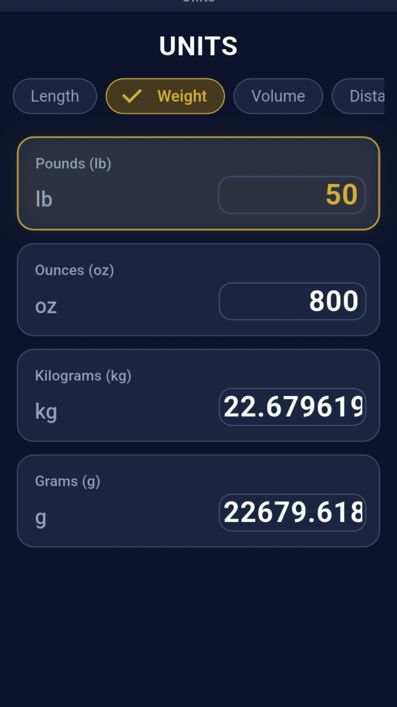
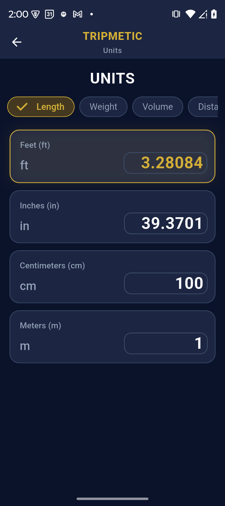
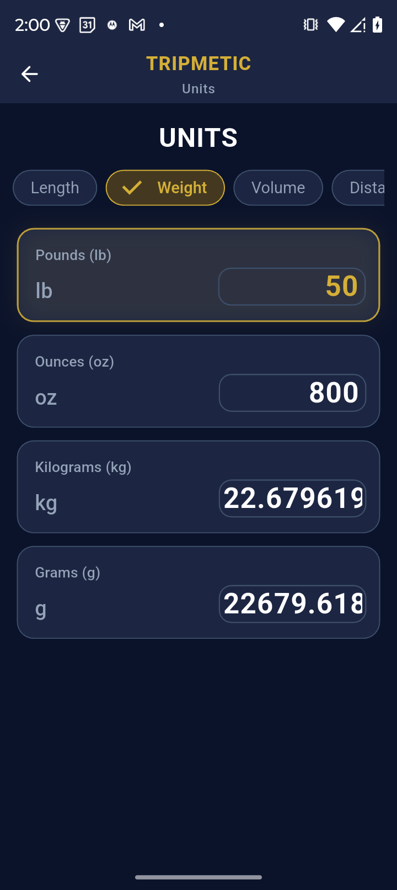
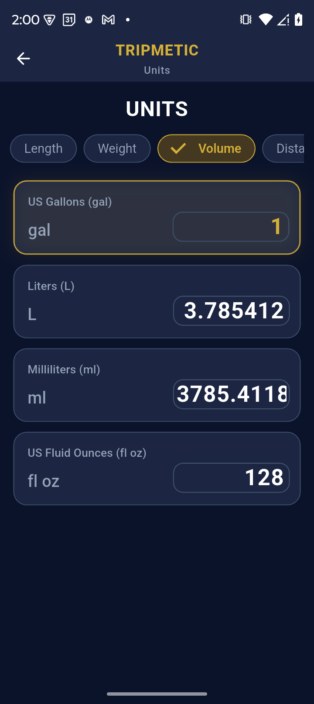

Whether you are calculating the weight of your luggage before a strict budget airline flight, or trying to decipher the local temperature forecast, dealing with unfamiliar units introduces daily friction.
The Tripmetic Unit Converter is a high-fidelity translation engine designed to seamlessly bridge the gap between the Metric and Imperial systems. Here is how to utilize this essential toolkit on the ground.
1 Access the Measurement Hub
Open the Tripmetic app, navigate to the More Tools section on your bottom navigation bar, and tap on Units. This will launch the central dashboard for all physical and environmental translations.

2 Select the Data Category
To keep the interface clean and intuitive, the converter is separated into six distinct, data-driven categories. Tap the dropdown menu to select exactly what type of measurement you need to translate:
- Length: Centimeters, Meters, Inches, Feet.
- Weight: Kilograms, Grams, Pounds, Ounces.
- Volume: Liters, Milliliters, Gallons, Fluid Ounces.
- Distance: Kilometers, Miles.
- Area: Square Meters, Square Feet, Hectares, Acres.
- Temperature: Celsius, Fahrenheit.

3 Input and Translate
Once you have selected your category, tap the input field and use the numeric keypad to enter your starting value (e.g., entering 28 in the Temperature tab). The engine instantly runs the mathematical conversion in real-time, displaying the high-fidelity output (e.g., 82.4°F) without the need to press a "calculate" button.

4 Bidirectional Fluidity
Need to run the calculation in reverse? Use the integrated swap icon between the two unit fields to instantly flip your Base and Target measurements. This allows you to fluidly shift from metric-to-imperial to imperial-to-metric without re-entering your data.

Frequently Asked Questions
No. The entire conversion logic is precision-engineered directly into the app's architecture, allowing for instantaneous offline calculations without ever pinging a server.
The Tripmetic engine supports comprehensive translations between the widely used global Metric system and the Imperial (US Customary) system.